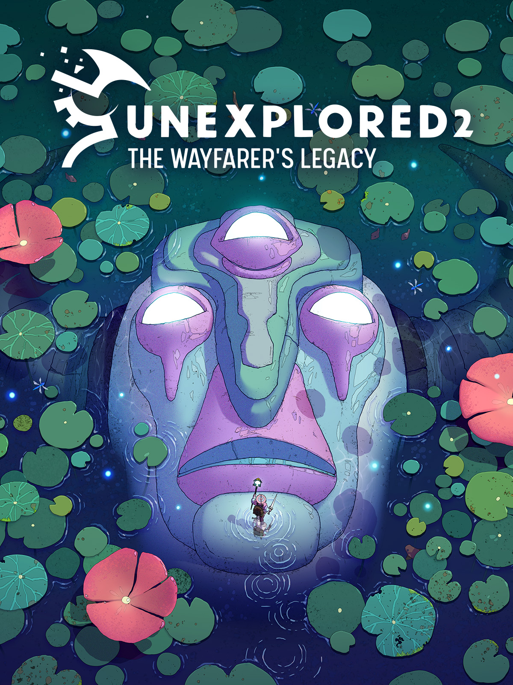
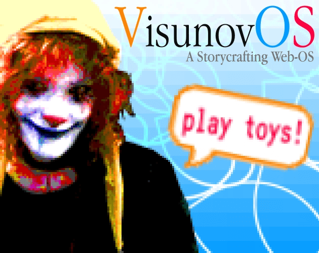
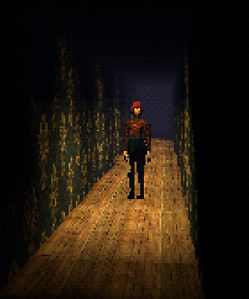
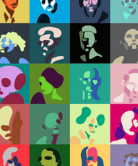
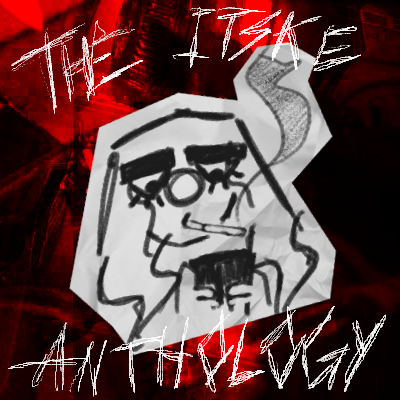
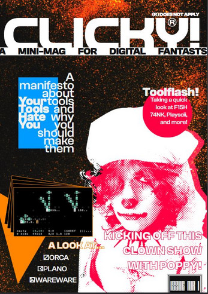
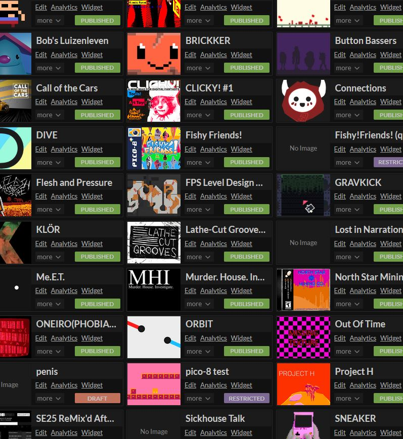

'LEXIE'
Interactive Narrative Designer

Alexandria Franka Maria is...
An Utrecht-based game and interactive narrative designer, with her roots in TTRPG homebrew.
A Creative Media and Game Technologies graduate, graduating with a project on melding pen-and-paper and digital gaming in The Anders Cyclopaedia.
An Experimental Publishing graduate, graduating on digital play as artistic development with VisunovOS.
Probably working on some thing or another, while making ends meet and finding time to watch a shitton of movies.
alexandria@lexie.land
shoebby#1212
RESUME

The Anders Cyclopaedia
(BSc Grad Project)
Lexicology and Exploration
An experiment of merging digital and pen & paper gameplay. Explore a parallel world and record its denizens to your Cyclopaedia.
| Tags: | Third-Person // Exploration // Puzzle |
|---|---|
| Engine: | Unity (2022.3.10f1) |
| Dev Time: | 20 weeks |
| Play: | The Anders Cyclopaedia |
| Companion Paper: | No Stupid Questions |
| Contributions | |||
|---|---|---|---|
| Art | Modelling and texturing a 3D player model. | Gameplay | Establishing the core premise of the game. |
| Modelling and texturing 4 Andersian creatures. | Concepting and designing the Cyclopaedia. | ||
| Modelling and texturing various environmental assets. | Designing 5 main areas with unique characteristics and puzzles. | ||
| Level | Building 3 explorable areas. | Narrative | Writing all of the game's dialogue. |
| Animation | Rigging and animating each creature. | Writing the Cyclopaedia | |
| Rigging and making a portion of the animations for the player character. | Developing narrative "pipe" scenes between explorable areas. | ||
| Audio | Producing various sound effects. | ||
| Producing 1 musical track | |||

oneiro(phobia/phrenia)
(forever ongoing)
crt tv dreamscape sim
Software you can wander through, inspired by the dreams and nightmares of me and my loved ones.
| Tags: | Walking-Sim // Atmospheric // Puzzle |
|---|---|
| Engine: | Unity (2019.4.40f1) |
| Dev Time: | 3 months |
| Play: | ONEIRO(PHOBIA/PHRENIA) |
| Contributions | |||
|---|---|---|---|
| Development | Developing a scene switching system based on numerical key inputs. | Game | Designing 14 traversable channels, interlinked by puzzles. |
| First time working with interfaces, to develop a solid system for implementing interactables. | UI | Designing and implementing UI elements. | |
| Developing an elaborate, reusable, first-person rigidbody player controller. | Audio | Producing 9 musical tracks. | |
| Video | Research into and production of emulated VHS footage. | ||

Unexplored 2: The Wayfarer's Legacy
(Internship)
"Take care, wayfarer."
UE2 is a roguelite RPG, which I was able to contribute to during the last 5 months of development. I mostly worked on narrative, UX, and UI design.
| Tags: | Roguelite // RPG // Damn Hard |
|---|---|
| Engine: | Unity |
| Duration: | 5 months |
| Store Page: | Unexplored 2 |
| Internship Report: | PDF (Dutch) |
| Contributions | |||
|---|---|---|---|
| Content | Designing gift items, relics, consumables, and trade items. | UX | Designing mockups and writing proposals for controller support. |
| Designing and implementing journey encounters. | UI | Designing a map-marking system. | |
| Narrative | Writing NPC dialogue. | QA | Helping individual players by fixing their saves in case of bugs. |
| Writing item descriptions. | Compiling player feedback and writing feature/bugfix proposals. | ||
| Designing Questlines | |||
| Redesigning the clan relation system. | |||

VisunovOS
(MA Grad Project)
Art, Play, and the Web
VisunovOS is a playful and weird art-making web-OS. It features a variety of toy-tools that play with the features of HTML, CSS, and JS, remixing them in ways that may or may not be approved by the W3C.
| Tags: | Operating System // Ergodic // Art-Making Tool |
|---|---|
| Engine: | The World Wide Web |
| Dev Time: | ~half an academic year |
| Play: | VisunovOS |
| Companion Paper: | Cannons, Dynamite Erasers, and Screaming Into The Void — Investigating the relation between art toys and artistic development |
| Contributions | |||
|---|---|---|---|
| Webdev | Learning how to do web stuff in the first place (thank you web friends and MDN docs). | Other | Developing and assembling a drag look for VisunovOS's mascot Poppy. |
| Creating 6 'art toys', including one that exports slideshows into an itch.io-compatible HTML5 format. | Writing extensive documentation on the developed art toys and how to clone and modify VisunovOS. | ||
| Learning how to self-host and set up a web server using CloudPanel. | Running two small VisunovOS game jams, one offline and one online. | ||
| Art | Developing a widely useable visual identity for VisunovOS. | Filming and editing a release trailer. | |
| Designing pixel art icons for all the different art toys and 'desktop' apps. | |||

Maintenance
(Shelved)
"Take your self, you'll be okay."
Maintenance is a psychological survival horror game. Though in the vein of classics such as Silent Hill, Kuon, Rule of Rose, and Eternal Darkness, it strives to carve its own path using contemporary themes as inspiration for its narrative.
| Tags: | Survival Horror // Atmospheric // Queer |
|---|---|
| Engine: | Unity (2019.4.40f1) |
| Dev Time: | Paused |
| Design Bible: | PDF (WIP) |
| Contributions | |||
|---|---|---|---|
| Development | Programming a flexible fixed camera system. | Art | Modelling, texturing, and animating the player character. |
| Programming a functional inventory system. | Environmental and prop design. | ||
| Design | Starting and maintaining a design bible. | Narrative | Writing NPC dialogue. |
| Designing multiple puzzles. | Writing item descriptions. | ||
| Designing multiple enemies. | |||

The Pluimer Complex
(Shelved)
"Observe, Learn, Adapt, Reflect."
The Pluimer Complex has the player take on the role of an apartment complex’s surveillance AI, installed by a regime that has since been toppled and has left the system forgotten.
With a master long gone the player observes and learns from the day-by-day lives of the folk that live ‘inside of them’.
| Tags: | Visual Novel // RPG // Existential |
|---|---|
| Engine: | Unity (2019.4.40f1) |
| Dev Time: | Paused |
| Design Bible: | PDF (WIP) |
| Contributions | |||
|---|---|---|---|
| Design | Maintaining a design bible. | Narrative | Plotting out narrative threads of the different apartments. |
| Designing a PC degradation system. | Designing the 'Library of Norms' as an immersive progression system. | ||
| Designing a 'growing' character customization system. | Art | Drawing 30 abstract character portraits. | |

The Itske Anthology
(Personal Project)
The Messy Life of a Faggy Clown
The Itske Anthology loosely follows the life of Itske, a mildly pathetic, clumsy, and heavily introspective transgender clown girl. Follow her along her journey of sex, death, and self-uncovery.
| Tags: | Visual Novel // Tragicomedy // Queer Vent Art |
|---|---|
| Engines: | Renpy // VisunovOS |
| Act I: | Flesh and Pressure |
| Act II: | Blood & Magnetic Tape |
| Act III: | ??? |
| Act IV: | ??? |
| Act V: | ??? |
| Contributions | |||
|---|---|---|---|
| Development | First project made in Renpy, getting the hang of its systems and basic features. | Art | An extensive character design process to arrive at Itske's look. |
| Narrative | Writing and editing multiple linear narratives. | Sketching characters and various expressions, separated in layers for Renpy use. | |
| Audio | Producing the main menu track for FnP. | Location photography and photo editing for backgrounds. | |

CLICKY!
(Personal Project)
spotlighting experimental digital art tools
Research done during the development of VisunovOS brought me to value 'art toys' and digital art tools that provide space to meander and ponder, rather than providing absolute control and efficiency.
CLICKY! is (hopefully) a series of zines made to spotlight these digital tools, which reinvent the fundamental practices of digital art-making.
| Tags: | Publication // Art Tools // Clowncore |
|---|---|
| Engine: | Paged.JS |
| Issue #1: | Orca // Plano // Wareware |
| Contributions | |||
|---|---|---|---|
| Publication | Fully designed and laid out with HTML/CSS thanks to Paged.JS | Writing | Wrote 3 main articles, a manifesto, and the rest of the body text. |
| Printed and bound 50 copies for sale during events. | |||

My other projects include a number of solo and group projects made for and during my studies, including but not limited to:
- A pawful of jam-made visual novels
- A tarot-based narrative coming of age story
- A horror racing game
- A top-down speedrunning shooter
- A cozy PICO-8 fishing game
- An asteroid mining RTS
- A teleportation-based 2D puzzle game
- A transit-based social VR game
All of these, and more, can be found on my Itch!
Lalala